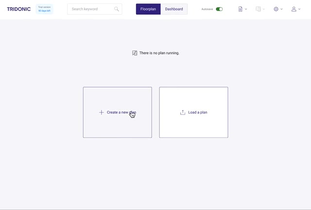
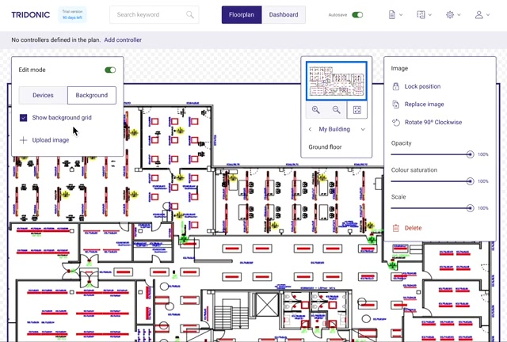
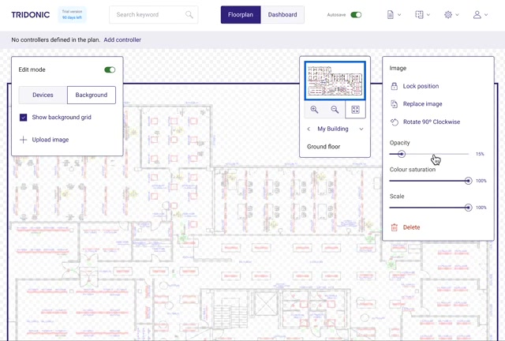

Start from the building
Why
A new installation starts with a plan, not a device list. The architect's drawing is uploaded, then faded and desaturated into a quiet background so devices stand out.
Trade-off
One more setup step before anything is useful. Without it, every later step goes back to addresses.


